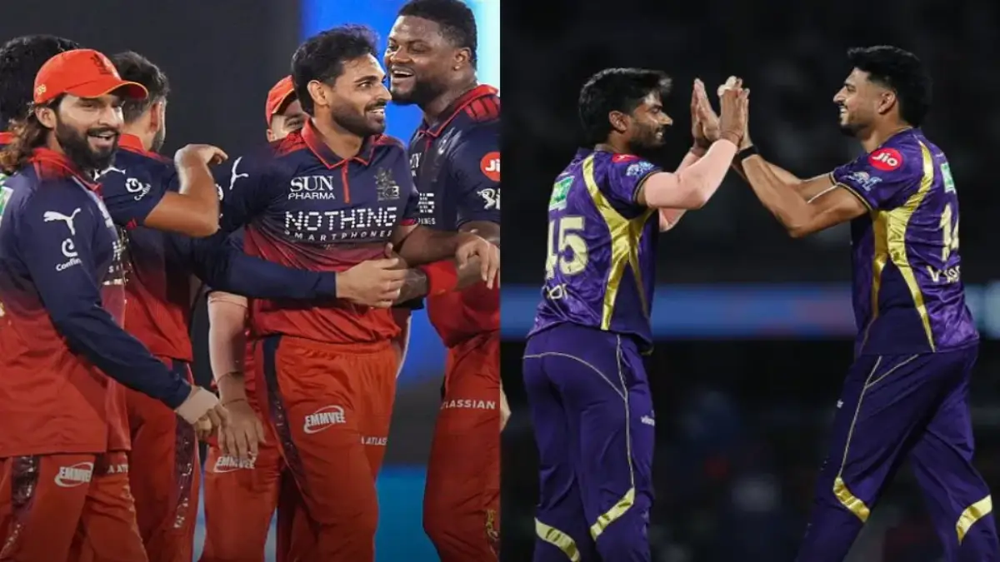

KKR vs RCB Match Preview: High-Voltage IPL 2026 Clash

Kolkata Knight Riders (KKR) and Royal Challengers Bengaluru (RCB) are set for another blockbuster IPL encounter as playoff pressure continues to rise in IPL 2026.
Match Details
- Match: KKR vs RCB
- Tournament: IPL 2026
- Venue: Shaheed Veer Narayan Singh International Stadium, Raipur
- Date: May 13, 2026
- Time: 7:30 PM IST
Race to the IPL 2026 Playoffs
The playoff race has become extremely intense, making this clash between KKR and RCB even more important.
Royal Challengers Bengaluru are aiming for a top-two finish in the points table, which would give them an extra opportunity in the playoffs. A victory here could strengthen their position significantly.
Kolkata Knight Riders, meanwhile, are in a must-win situation. Another loss could seriously damage their qualification chances and increase pressure for the remaining league matches.
Because of the high-pressure playoff scenario, fans can expect both teams to play aggressive cricket right from the beginning.
Virat Kohli Under Pressure
Virat Kohli enters this crucial clash after consecutive ducks, creating major discussion among fans and cricket experts.
Varun Chakravarthy Injury Update
KKR may face concerns regarding the fitness of Varun Chakravarthy. Reports suggest the mystery spinner has been recovering from discomfort ahead of the match.
His availability could play a major role because KKR heavily rely on spin during middle overs.
Will Phil Salt Play Against KKR Today?
RCB fans are also eagerly waiting for an update on explosive opener Phil Salt ahead of the crucial clash against KKR.
Salt has missed the last few matches due to a finger injury and had travelled back to England for medical scans. Although reports suggest he has rejoined the RCB camp, there is still no official confirmation regarding his inclusion in the playing XI for today's game.
In Salt’s absence, Jacob Bethell is expected to continue opening alongside Virat Kohli. However, RCB management could take a late decision depending on Salt’s fitness before the toss.
Salt’s return would provide a major boost to RCB’s powerplay batting, especially during this important playoff phase of IPL 2026.
Pitch Report
The Raipur pitch is expected to support batting initially while pacers may receive movement with the new ball.
- Good batting conditions
- Pacers may get early swing
- Spinners could dominate middle overs
- Dew may help chasing teams
Players to Watch
RCB
- Virat Kohli
- Rajat Patidar
- Josh Hazlewood
- Tim David
KKR
- Sunil Narine
- Rinku Singh
- Ajinkya Rahane
- Varun Chakravarthy
Head-to-Head Record
KKR have dominated recent encounters against RCB and currently lead the overall head-to-head battle.
Fantasy Cricket Tips
- Pick top-order batters
- Include death-over bowlers
- Choose at least one spinner
- Kohli could be a high-risk, high-reward captain choice
Match Prediction
The contest looks evenly balanced. KKR may have an edge if their spin bowlers dominate, while RCB could take control if Kohli and the top order fire early.